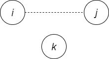
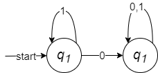

正则表达式
- $\to$正则表达式
- 正则表达式的递归定义
- 正则表达式实例
- 自动机和正则表达式
- 正则表达式的代数定理
- 有穷自动机
- 通过机器装置描述正则语言
- 用计算机编写相应算法，用于实现
正则表达式
- 通过表达式描述正则语言，代数表示方法，使用方便
- 应用广泛
- grep工具（Global Regular Expression and Print)
- Emacs/Vim文本编辑器
- lex/flex词法分析器
- 各种程序设计语言Python/Perl/Haskell…
本文正则表达式并非POSIX正则表达式，只是一种形式化的表示
语言的运算：
设$L$和$M$是两个语言，那么：
例：若有语言$L = \lbrace 0,11 \rbrace$ 和 $M = \lbrace \epsilon, 001 \rbrace$，那么：
例：对于空语言$\emptyset$，$\lbrace \epsilon \rbrace$，字母表$\Sigma$，$\Sigma^{\ast}$
四则运算表达式的递归定义
- 任何数都是四则运算表达式
- 如果$a$和$b$是四则运算表达式，那么都是四则运算表达式
正则表达式的递归定义：
如果$\Sigma$是字母表，则$\Sigma$上的正则表达式递归定义为：
- $\emptyset$是一个正则表达式，表示空语言
- $\epsilon$是一个正则表达式，表示语言$\lbrace \epsilon \rbrace$
- $\forall a \in \Sigma$，$a$是一个正则表达式，表示语言$\lbrace a \rbrace$
- 如果正则表达式$\boldsymbol{r}$和$\boldsymbol{s}$分别表示语言$R$和$S$，那么：都是正则表达式，分别表示语言：
正则表达式中三总运算以及括号的优先级：
- 首先，“括号”的优先级最高
- 其次，“星”运算：$\boldsymbol{r}^{\ast}$
- 然后，“连接运算”,$\boldsymbol{rs}$,$\boldsymbol{r} \cdot \boldsymbol{s}$
- 最后，“加”最低，$\boldsymbol{r} + \boldsymbol{s}$,$\boldsymbol{r} \cup \boldsymbol{s}$
例：
例:
| $E$ | $\boldsymbol{L}(E)$ |
|---|---|
| $\boldsymbol{a} + \boldsymbol{b}$ | $\boldsymbol{L}(\boldsymbol{a}) \cup \boldsymbol{L}(\boldsymbol{b}) = \lbrace a \rbrace \cup \lbrace b \rbrace = \lbrace a,b \rbrace$ |
| $ \boldsymbol{bb} $ | $ \boldsymbol{L}(\boldsymbol{b}) \cdot \boldsymbol{L}(\boldsymbol{b}) = \lbrace b \rbrace \cdot \lbrace b \rbrace = \lbrace bb \rbrace $ |
| $ (\boldsymbol{a} + \boldsymbol{b})(\boldsymbol{a} + \boldsymbol{b}) $ | $ \lbrace a,b \rbrace \lbrace a,b \rbrace = \lbrace aa,ab,ba,bb \rbrace $ |
| $ (\boldsymbol{a} + \boldsymbol{b})^{\ast}(\boldsymbol{a} + \boldsymbol{bb}) $ | $ \lbrace a,b \rbrace^{\ast} \lbrace a,bb \rbrace = \lbrace a,b \rbrace^{\ast} \lbrace a \rbrace \cup \lbrace a,b \rbrace^{\ast} \lbrace bb \rbrace = \lbrace w \in \lbrace a,b \rbrace^{\ast} \vert w \text{仅以a或bb结尾} \rbrace $ |
| $ \boldsymbol{1} + (\boldsymbol{01})^{\ast} $ | $ \lbrace 1, \epsilon, 01,0101,010101,… \rbrace $ |
| $ (\boldsymbol{0} + \boldsymbol{1})^{\ast} \boldsymbol{01} (\boldsymbol{0} + \boldsymbol{1})^{\ast} $ | $ \lbrace x01y \vert x,y \in \lbrace 0,1 \rbrace^{\ast} \rbrace $ |
例：给出正则表达式$(\boldsymbol{aa})^{\ast} (\boldsymbol{bb})^{\ast} \boldsymbol{b} $定义的语言
例：给出正则表达式，$L = \lbrace w | w \subseteq \lbrace 0,1 \rbrace ^ {\ast} \text{且倒数第三个字符是1}$
如果是自动机器来描述，则很复杂，但正则表达式表示则很简洁：
例：Design regular expression for $L = \lbrace w \vert w \in \lbrace 0,1 \rbrace^{\ast} \text{and $w$ has no pair of consecutive 0’s} \rbrace$
不允许出现连续的0，那么，就要0前后必有1，$(\boldsymbol{1} + \boldsymbol{01})^{\ast}$，但是此时还不能表示0结尾的串，于是改为$(\boldsymbol{1} + \boldsymbol{01})^{\ast} \boldsymbol{0}$，但是此时又不能表示空串了，所以最终结果为：$(\boldsymbol{1} + \boldsymbol{01})^{\ast} (\boldsymbol{0} + \epsilon)$
- $\to$正则表达式
- 自动机和正则表达式
- 由自动机到正则表达式
- 由正则表达式到自动机
- 正则表达式的代数定理
DFA到正则表达式
DFA，NFA，$\epsilon-$NFA和正则表达式在表示语言的能力上等价。
- 任何NFA都可以不适用非确定性去模拟DFA，所以任何DFA表示的语言都可以被NFA识别；可以用子集构造法构造与NFA等价的DFA，所以任何NFA表示的语言都能被一个DFA表示，即NFA和DFA是等价的。
- 任何$\epsilon-$NFA可以不使用空转移和非确定性去模拟一个DFA，所以任何DFA表示的语言都可以被$\epsilon-$NFA所表示；可以使用消除空转移的子集构造法构造与$\epsilon-$NFA等价的DFA，所以任何$\epsilon-$NFA表示的语言都能被一个DFA表示，即DFA和$\epsilon-$NFA是等价的。
- 任何DFA都可以构造一个和他等价的正则表达式，即任何DFA能表示的语言都能被一个正则表达式表示；任何正则表达式表示的语言，都能被一个$\epsilon-$NFA识别，而DFA和$\epsilon-$NFA是等价的。综上，有穷自动机和正则表达式是等价的。
由DFA到正则表达式，可以用递归表达式法或状态消除法实现
递归表达式法
DFA能描述的语言，可以看成是起止节点之间的所有路径，用$R_{ij}$表示$i,j$两个节点之间的全部路径，可以递归的表示为：
不经过k指的是路径节点中除了端点，都不出现k
定理3：若$L = \boldsymbol{L}(A)$是DFA A的语言，那么存在正则表达式$R$满足$L = \boldsymbol(R)$
证明：对DFA A的状态编号，以1为开始状态，即：
设正则表达式$R_{ij}^{(k)}$表示从$i$到$j$但中间节点不超过$k$全部路径的字符串集：
那么，与$A = (\lbrace 1,2…n \rbrace, \Sigma, \delta, 1, F)$等价的正则表达式为：
其递归式为
其中$R{ij}^{(k-1)}$表示不经过$k$的，$R{ik}^{(k-1)}(R{kk}^{(k-1)})^{\ast} R{kj}^{(k-1)}$表示经过$k$的。$k$为0时，则表示直连。
下面对$k$归纳，证明可以用上递归式求得$R_{ij}^{(k)}$：
归纳基础：
当$i \not= j, k = 0$时，即$i$到$j$没经过任何中间节点
- 没有$i$到$j$的状态转移： $R_{ij}^{(0)} = \emptyset$
- 有一个$i$到$j$的状态转移：$R_{ij}^{(0)} = \boldsymbol{a}$
- 有多个$i$到$j$的状态转移：$R_{ij}^{(0)} = \boldsymbol{a_1} + \boldsymbol{a_2} + … + \boldsymbol{a_t}$
当$i = j, k = 0$时，即$i$到自身没经过任何中间节点
- 状态$i$没有到自己状态转移： $R_{ii}^{(0)} = \emptyset$

- 状态$i$有一个到自身的状态转移：$R_{ii}^{(0)} = \boldsymbol{a} + \boldsymbol{\epsilon}$
- 状态$i$有多个到自身的状态转移：$R_{ii}^{(0)} = \boldsymbol{a_1} + \boldsymbol{a_2} + … + \boldsymbol{a_t} + \boldsymbol{\epsilon} $
即$k = 0$时：
归纳假设：
已知$R{ij}^{(k-1)}$是从$i$到$j$但中间节点不超过$k-1$的全部路径，同理已知$R{ik}^{(k-1)}$，$R{kk}^{(k-1)}$和$R{kj}^{(k-1)}$。
归纳地推：那么$R_{ij}^{(k)}$中全部路径，可用节点$k$分为两部分
- 从$i$到$j$不经过$k$的：$R{ij}^{(k)} = R{ij}^{(k-1)}$
 - 从$i$到$j$经过$k$的：$R{ij}^{(k)} = R{ik}^{(k-1)} (R{kk}^{(k-1)})^{\ast} R{kj}^{(k-1)}$
因此：$R{ij}^{(k)} = R{ij}^{(k-1)} + R{ik}^{(k-1)}(R{kk}^{(k-1)})^{\ast} R_{kj}^{(k-1)}$
例：将如图DFA转化为正则表达式：

共有两个节点，先计算$R_{ij}^{(0)}$
| $R_{ij}^(k)$ | $k=0$ |
|---|---|
| $R_{11}^{(0)}$ | $\epsilon + \boldsymbol{1}$ |
| $R_{12}^{(0)}$ | $\boldsymbol{0}$ |
| $R_{21}^{(0)}$ | $\emptyset$ |
| $R_{22}^{(0)}$ | $\epsilon + \boldsymbol{0} + \boldsymbol{1}$ |
计算$R_{ij}^{(1)}$
| $R_{ij}^{(k)}$ | $k=1$ | 化简 |
|---|---|---|
| $R_{11}^{(1)}$ | $(\epsilon + \boldsymbol{1}) + (\epsilon + \boldsymbol{1}) (\epsilon + \boldsymbol{1})^{\ast} (\epsilon + \boldsymbol{1})$ | $\boldsymbol{1}^{\ast}$ |
| $R_{12}^{(1)}$ | $\boldsymbol{0} + (\epsilon + \boldsymbol{1})(\epsilon + \boldsymbol{1})^{\ast} \boldsymbol{0}$ | $\boldsymbol{1}^{\ast}\boldsymbol{0}$ |
| $R_{21}^{(1)}$ | $\emptyset + \emptyset (\epsilon + \boldsymbol{1})^{\ast} (\epsilon + \boldsymbol{1})$ | $\emptyset$ |
| $R_{22}^{(1)}$ | $\epsilon + \boldsymbol{0} + \boldsymbol{1} + \emptyset (\epsilon + \boldsymbol{1})^{\ast} \boldsymbol{0}$ | $\emptyset + \boldsymbol{0} + \boldsymbol{1}$ |
计算$R_{ij}^{(2)}$
| $R_{ij}^(k)$ | $k=2$ | 化简 |
|---|---|---|
| $R_{11}^{(2)}$ | $\boldsymbol{1}^{\ast} + \boldsymbol{1}^{\ast}\boldsymbol{0} (\epsilon + \boldsymbol{0} + \boldsymbol{1})^{\ast} \emptyset$ | $\boldsymbol{1}^{\ast}$ |
| $R_{12}^{(2)}$ | $\boldsymbol{1}^{\ast} \boldsymbol{0} + \boldsymbol{1}^{\ast} \boldsymbol{0} (\epsilon + \boldsymbol{0} + \boldsymbol{1})^{\ast} (\epsilon + \boldsymbol{0} + \boldsymbol{1})$ | $\boldsymbol{1}^{\ast} \boldsymbol{0} (\boldsymbol{0} + \boldsymbol{1})^{\ast}$ |
| $R_{21}^{(2)}$ | $\emptyset + (\epsilon + \boldsymbol{0} + \boldsymbol{1})(\epsilon + \boldsymbol{0} + \boldsymbol{1})^{\ast} \emptyset$ | $\emptyset$ |
| $R_{22}^{(2)}$ | $\epsilon + \boldsymbol{1} + \boldsymbol{1} + (\epsilon + \boldsymbol{0} + \boldsymbol{1})(\epsilon + \boldsymbol{0} + \boldsymbol{1})^{\ast} (\epsilon + \boldsymbol{0} + \boldsymbol{1})$ | $(\boldsymbol{0} + \boldsymbol{1})^{\ast}$ |
因为只有$q2$是接收状态，所以该DFA正则表达式为$R{12}^{(2)} = \boldsymbol{1}^{\ast}\boldsymbol{0}(\boldsymbol{0} + \boldsymbol{1})^{\ast}$
几个基本的化简原则：
如果$\boldsymbol{r}$和$\boldsymbol{s}$是两个正则表达式：
例：将如图DFA转换成正则表达式
| $k=0$ | $k=1$ | $k=2$ | |
|---|---|---|---|
| $R_{11}^{(k)}$ | $\epsilon$ | $\epsilon$ | $(\boldsymbol{00})^{\ast}$ |
| $R_{12}^{(k)}$ | $\boldsymbol{0}$ | $\boldsymbol{0}$ | $\boldsymbol{0}(\boldsymbol{00})^{\ast}$ |
| $R_{13}^{(k)}$ | $\boldsymbol{1}$ | $\boldsymbol{1}$ | $\boldsymbol{0}^{\ast}\boldsymbol{1}$ |
| $R_{21}^{(k)}$ | $\boldsymbol{0}$ | $\boldsymbol{0}$ | $\boldsymbol{0}(\boldsymbol{00})^{\ast}$ |
| $R_{22}^{(k)}$ | $\epsilon$ | $\epsilon + \boldsymbol{00}$ | $(\boldsymbol{00})^{\ast}$ |
| $R_{23}^{(k)}$ | $\boldsymbol{1}$ | $\boldsymbol{1}+\boldsymbol{01}$ | $(\boldsymbol{0})^{\ast}\boldsymbol{1}$ |
| $R_{31}^{(k)}$ | $\emptyset$ | $\emptyset$ | $(\boldsymbol{0}+\boldsymbol{1})(\boldsymbol{00})^{\ast}\boldsymbol{0}$ |
| $R_{32}^{(k)}$ | $\boldsymbol{0} + \boldsymbol{1}$ | $\boldsymbol{0} + \boldsymbol{1}$ | $(\boldsymbol{0}+\boldsymbol{1})(\boldsymbol{00})^{\ast}$ |
| $R_{33}^{(k)}$ | $\epsilon$ | $\epsilon$ | $\epsilon + (\boldsymbol{0}+\boldsymbol{1})\boldsymbol{0}^{\ast}\boldsymbol{1}$ |
状态消除法
- 从DFA中逐个删除状态
- 每次删除一个状态，用标记了正则表达式的新路径替换被删掉的路径
- 保持自动机等价
基本的几种情况：
对于更一般的情况：
若要除掉S，除去loop边，S有2出2进，所以要补4条边
状态递归表达式法相比，状态消除法不适合计算机来实现，而且不适用于太复杂的场景
例：利用状态消除法，构造下图DFA的正则表达式。
- 利用空只能由，添加新的开始状态$s$和结束状态$f$。如果有多个结束状态，则全部通过空转移跳到$f$
- 消除状态$q_1$，添加$q_0 \to q_2$和$q_2 \to q_2$的路径
- 消除状态$q_0$，添加$s \to q_2$和$q_2 \to q_2$的路径
消除状态$q_2$，添加$s \to f$的路径
因此，该DFA对应的正则表达式是：$\boldsymbol{1}^{\ast}\boldsymbol{00}^{\ast}\boldsymbol{1}(\boldsymbol{00}^{\ast}\boldsymbol{1}+\boldsymbol{11}^{\ast}\boldsymbol{00}^{\ast}\boldsymbol{1})^{\ast}$
正则表达式到DFA
定理：正则表达式定义的语言，都可以被有穷自动机识别
由正则表达式构造$\epsilon-$NFA:
任何正则表达式$\boldsymbol{e}$，都存在与其等价的$\epsilon-$NFA A，即$L(A) = L(e)$，并且A满足：
- 仅有一个接受状态
- 没有进入开始状态的边
- 没有离开接受状态的边
证明：对于正则表达式使用归纳法：
归纳基础：
对于$\emptyset$，有$\epsilon-$NFA
- 对于$\boldsymbol{\epsilon}$，有$\epsilon-$NFA
- 对于$\forall a \in \Sigma$，对于$\boldsymbol{a}$，有$\epsilon-$NFA
归纳递推：若$\boldsymbol{r}$和$\boldsymbol{s}$为正则表达式，则他们对应的$\epsilon-$NFA分别为$R$和$S$:
则正则表达式$\boldsymbol{r}+\boldsymbol{s}$，$\boldsymbol{rs}$和$\boldsymbol{r}^{\ast}$，可由$R$和$S$分别构造如下：
- 对于$\boldsymbol{r}+ \boldsymbol{s}$，有$\epsilon-$NFA：
- 对于$\boldsymbol{rs}$，有$\epsilon-$NFA：
- 对于$\boldsymbol{r}^{\ast}$，有$\epsilon-$NFA：
例：正则表达式$(\boldsymbol{0} + \boldsymbol{1})^{\ast} \boldsymbol{1} (\boldsymbol{0} + \boldsymbol{1})$构造为$\epsilon-$NFA。
根据上述规则：
先构造$\boldsymbol{0}$和$\boldsymbol{1}$：
再构造$\boldsymbol{0} + \boldsymbol{1}$：
再构造$(\boldsymbol{0} + \boldsymbol{1})^{\ast}$：
最后，组合成$(\boldsymbol{0} + \boldsymbol{1})^{\ast} \boldsymbol{1} (\boldsymbol{0} + \boldsymbol{1})$，结果如下：
正则表达式的代数定理
用于检查一个带参数的正则表达式是否为真
定义：含有变量的两个正则表达式，如果以任意语言替换其变量，二者所表示的语言仍然相同，则称这两个正则表达式等价。在这样的意义下，正则表达式满足一些代数定律。
并运算：
- 结合律：$(L+M)+N = L+(M+N)$
- 交换律：$L+M=M+L$
- 幂等律：$L+L=L$
- 单位元：$\emptyset + L = L + \emptyset = L$
连接运算：
- 结合律：$(LM)N = L(MN)$
- 单位元：$\epsilon L=L \epsilon = L$
- 零元：$\emptyset L = L \emptyset = \emptyset$
- $LM \not= ML$
分配律：
- $L(M+N) = LM + LN$
- $(M+N)L = ML + NL$
闭包运算：
- $(L^{\ast})^{\ast} = L^{\ast}$
- $\emptyset ^{\ast} = \epsilon$
- $\epsilon^{\ast} = \epsilon$
- $L^{\ast} = L^{+} + \epsilon$
- $(\epsilon + L)^{\ast} = L^{\ast}$
要判断表达式$E$和$F$是否等价，其中变量为$L_1,L_2,…,L_n$
- 将变量替换为具体表达式，得正则表达式$\boldsymbol{r}$和$\boldsymbol{s}$，例如，替换$L_i$为$\boldsymbol{a_i}$
- 判断$\boldsymbol{L}(\boldsymbol{r}) = \boldsymbol{L}(\boldsymbol{s})$，如果相等则$E=F$，否则$E \not= F$
例：判断$(L+M)^{\ast} = (L^{\ast}M^{\ast})^{\ast}$
将$L$和$M$替换为$\boldsymbol{a}$和$\boldsymbol{b}$，因为$(\boldsymbol{a} + \boldsymbol{b})^{\ast} = (\boldsymbol{a}^{\ast}\boldsymbol{b}^{\ast})^{\ast}$，$\boldsymbol{L}((\boldsymbol{a} + \boldsymbol{b})^{\ast}) = \boldsymbol{L}((\boldsymbol{a}^{\ast}\boldsymbol{b}^{\ast})^{\ast})$，所以$(L+M)^{\ast}=(L^{\ast} M^{\ast})^{\ast}$
例：判断$L+ML=(L+M)L$
- 将$L$和$M$替换为$\boldsymbol{a}$和$\boldsymbol{b}$
- 判断$\boldsymbol{a} + \boldsymbol{ba} = (\boldsymbol{a} + \boldsymbol{b})\boldsymbol{a}$
- 因为$aa \not\in \boldsymbol{a} + \boldsymbol{ba}$，而$aa \in (\boldsymbol{a} + \boldsymbol{b})\boldsymbol{a}$
- 所以$\boldsymbol{a} + \boldsymbol{ba} \not= (\boldsymbol{a} + \boldsymbol{b})\boldsymbol{a}$，即$ L+ML \not= (L+M)L $
注意：这种方法仅限于判断正则表达式，否则会发生错误
例：若用这种方法判断$L \cap M \cap N = L \cap M$，则$\boldsymbol{a},\boldsymbol{b},\boldsymbol{c}$替换$L,M,N$，有
而显然：
说明，该方法仅仅适用于检验带有连接/并/闭包的正则表达式的式子。
正则语言的性质
- $L=\lbrace 0^m 1^n \vert m,n \geq 0 \rbrace$ 可以写作 $\boldsymbol{0}^{\ast}\boldsymbol{1}^{\ast}$，是正则语言
- $L=\lbrace 0^m 1^n \vert m \geq 2,n \geq 4 \rbrace$ 可以写作 $\boldsymbol{00}\boldsymbol{0}^{\ast}\boldsymbol{1111}\boldsymbol{1}^{\ast}$，是正则语言
- $L=\lbrace 0^n 1^n \vert n \geq 0 \rbrace$，由于有穷自动机无法记住0的数量，并匹配等量的1，所以不是正则语言
那么，如何用形式化的方式，识别一个语言是否是正则语言呢？
正则语言的泵引理
定理：如果语言$L$是正则的，那么存在正整数$N$，对于$\forall w \in L$，只要$\vert w \vert \geq N$就可以将$w$分成三部分$w = xyz$满足：
- $y \not= \epsilon (\vert y \vert \gt 0)$
- $\vert xy \vert \leq N$
- $\forall k \geq 0,xy^kz \in L$
泵引理又称Pumping Lemma，$y$像泵可以不断泵出新串。只要语言$L$确定，$N$就是确定的。泵引理是正则语言的必要条件，如果一个语言不符合泵引理，那他一定不是正则语言。
证明：
- 如果$L$正则，那么存在有$n$个状态DFA A使得$\boldsymbol{L}(A) = L$
取$w = a_1…a_m \in L (m \geq n)$，定义$q_i = \hat\delta(q_0, a_1…a_i)$
DFA读入$a_n$进入$q_n$，一共经历了$n+1$个状态，而DFA一共只有$n$个状态。根据鸽巢原理，必有两个状态相同，设$q_i = q_j (0 \leq i \lt j \leq n)$
- 那么$w=xyz$如图，且有$\forall k \lt 0,xy^kz \in L$:

- 而因为$i \lt j$所以$y \not= \epsilon$，（即$\vert y \vert \gt 0$），因为$j \leq n$所以$\vert xy \vert \leq n$
泵引理的应用
例：证明$L_{01} = \lbrace 0^{\ast} 1^{\ast} |vert n \geq 0 \rbrace$不是正则语言。
利用泵引理证明语言的非正则性，需要使用反证法。
证明：
- 假设$L_{01}$是正则的
- 那么，存在$N \in \mathbb{Z}^{+}$，对$\forall w \in L_{01}(\vert w \vert) \geq N)$满足泵引理
- 从$L{01}$中取出$w=0^N1^N$，显然$w \in L{01}$且$\vert w \vert = 2N \leq N$
- 那么，$w$可以被分成$w=xyz$，且$\vert xy \vert \leq N$和$y \not= \epsilon$
- 因此$y$只能是$0^m$，且$m \gt 0$
- 那么$xy^2z = 0^{N+m}1^N \not \in L{01}$，而由泵引理$xy^2z \in L{01}$，矛盾
- 所以假设不成立，$L_{01}$不是正则
例：证明$L_{eq} = \lbrace w \vert w \text{由数量相等的0和1构成} \rbrace$不是正则
上例中已经证明了$L{01}$不是正则语言，而$L{01} \subseteq L{eq}$，但不能说明$L{eq}$也不是正则语言，因为$L_{01} \subseteq \Sigma^{\ast}$
证明：
- 假设$L_{eq}$是正则的
- 那么，存在$N \in \mathbb{Z}^{+}$，对$\forall w \in L_{eq}(\vert w \vert \geq N)$满足泵定理
- 从$L{eq}$中取$w = 0^N 1^N$，显然$w \in L{eq}$且$\vert w \vert = 2N \geq N$
- 那么，$w$可被分为$w = xyz$，且$\vert xy \vert \leq N$和$y \not= \epsilon$
- 因此$y$只能是$0^m$且$m \gt 0$
- 那么$xy^2z = 0^{N+m} 1^N \not \in L{eq}$，而由泵引理$xy^2z \in L{eq}$矛盾
- 所以假设不成立，$L_{eq}$不是正则的
例：证明$L = \lbrace 0^i1^i \vert i \gt j \rbrace$不是正则的
证明：
- 假设$L$是正则的
- 那么，存在$N \in \mathbb{Z}^{+}$，对$\forall w \in L(\vert w \vert \geq N)$满足泵引理
- 从$L$中取$w = 0^{N+1}1^N$，则$w \in L$且$\vert w \vert = 2N+1 \geq N$
- 由泵引理，$w$可被分成$w = xyz$，且$\vert xy \vert \leq N$和$y \not= \epsilon$
- 那么，$y$只能是$0^m$，且$m \geq 1$
- 难么$xy^0z=0^{N+1-m}1^N \not\in L$，因为$N+1-m \leq N$，而由泵引理$xy^0z \in L$，矛盾
“泵”既可以pump in，也可以pump out
例：证明$L = \lbrace a^3b^nc^{n-3} | n \geq 3 \rbrace$不是正则
证明：
- 假设$L$是正则的
- 那么，存在$N \in \mathbb{Z}^{+}$，对$\forall w \in L(\vert w \vert \geq N)$满足泵定理
- 从$L$中取出$w = a^3b^Nc^{N-3}$，则$w \in L$且$\vert w \vert = 2N \gt N$
- 由泵定理，$w$可被分别为$w = xyz$，且$\vert xy \vert \leq N$和$y \not= \epsilon$
- 那么，则$y$只可能有三种情况$m \gt 0,r \gt 0,s \gt 0)$
- $y=a^m$，则$xy^2z = a^{3+m}b^Nc^{N-3} \not\in L$
- $y=b^m$，则$xy^2z = a^{3}b^{N+m}c^{N-3} \not\in L$
- $y=a^rb^s$，则$xy^2z = a^{3}b^{s}a^{r}b^{N}c^{N-3} \not\in L$
- 无论$y$为何种情况，$xy^2z$都不可能再$L$中，与泵引理矛盾
- 所以假设不成立，$L$不是正则的
注意
- $L =\lbrace 0^n 1^n \vert 0 \leq n \leq 100 \rbrace$是有穷的，是正则语言
- $L = \lbrace 01 \rbrace $这种有限的串，并没有违反泵引理。对于有限语言，任何串的长度都不可能大于$N$，所以不能用泵引理去证明他不是正则语言。
- 泵引理只是正则语言的必要条件，只能用来证明某个语言不是正则的。与正则语言等价的定理是Myhill Nerode Theorem
例：语言$L$不是正则的，但每个串都可以应用泵引理
- 其中$A = \lbrace ca^nb^n \vert n \geq 1 \rbrace$ 部分不是正则的
- 而$B = \lbrace c^kw \vert k \not= 1, w \in \lbrace a,b \rbrace^{\ast} \rbrace$ 部分是正则的
- 而$A$的任何串$w = ca^ib^i$，都可应用泵定理，因为$w=(\epsilon)(c)(a^ib^i)$
重复字符$c$生成的新串都会落入$B$中。即存在符合泵引理，又不是正则的语言。
正则语言的封闭性
定义：正则语言经某些运算后得到的语言任然保持正则，称正则语言在这些运算下封闭。
正则语言$L$和$M$在这些运算下封闭：
- 并：$L \cup M$
- 交：$L \cap M$
- 连接：$LM$
- 反转：$L^R = \lbrace w^R \vert w \in L \rbrace$
- 闭包：$L^{\ast}$
- 同态：$h(L) = \lbrace h(w) \vert w \in L, \text{同态} h:\Sigma \to \Gamma^{\ast} \rbrace$
- 补：$\bar{L}$
- 逆同态：$h^{-1}(L) = \lbrace w \in \Sigma^{\ast} \vert h(w) \in L \subseteq \Gamma^{\ast}, \text{同态} h:\Sigma \to \Gamma^{\ast} \rbrace w$
- 差：$L-M$
定理：正则语言在并，连接，闭包运算下保持封闭
证明：由正则表达式的定义得证。语言$L=L(\boldsymbol{r})$,$M=L(\boldsymbol{s})$：
定理：如果$L$是$\Sigma^{\ast}$上的正则语言，那么$\bar{L} = \Sigma^{\ast} - L$也是正则的。
证明：设接受$L$的DFA是：
即$\boldsymbol{L}(A) = L$，构造DFA
则有$\bar{L} = \boldsymbol{L}(B)$，因为$\forall w \in \Sigma^{\ast}$
注意：用这种方法求正则语言的补的时候，DFA不能有缺失状态
例：若$\Sigma = \lbrace 0,1 \lbrace$，$L = \lbrace \epsilon \rbrace$的DFA如图，请给出$\bar{L}$的DFA
$\emptyset \not= \bar{\lbrace \epsilon \rbrace} = \Sigma^{+}$，应使用完整的DFA：
$\Sigma^{+} = \bar{\lbrace \epsilon \rbrace}$
例：证明$L_{neq} = \lbrace w \vert w \text{由数量不相等的0和1构成} \rbrace$不是正则语言
- 由泵引理不易直接证明，可以证明$\bar{L{neq}}$非正则，而$\bar{L{neq}} = L{eq}$可以用泵引理证明非正则，所以由封闭性$L{neq}$也不是正则的。
定理：若DFA $A_L$，$A_M$和$A$的定义如下：
其中:
则对任意$w \in \Sigma^{\ast}$:
证明：通过对$w$的归纳来证明：
- 归纳基础：当$w = \epsilon$时：归纳地推：当$w=xa$时，
定理：如果$L,M$是正则语言，那么$L \cap M$也是正则语言
证明1：由$L \cap M = \bar{bar{L} \cup bar{M}}$得证
证明2：由上一定理，构造识别$L \cap M$的DFA A，则$\forall w \in \Sigma^{\ast}$：
例：如果已知语言$L{01} = \lbrace 0^n1^n \vert n \geq 0 \rbrace $不是正则的，请用封闭性证明语言$L{eq} = \lbrace w \vert w \text{由数量相等的0和1构成} \rbrace$也不是正则的
证明：
- 首先，因为$\boldsymbol{0}^{\ast}\boldsymbol{1}^{\ast}$是正则语言
- 而$L{01} = \boldsymbol{L}(\boldsymbol{0}^{\ast}\boldsymbol{1}^{\ast}) \cap L{eq}$
- 如果$L_{eq}$是正则的，$L{01}$必然也是正则的
- 因为已知$L{01}$不是正则的，所以$L{eq}$一定不是正则的
例：如果$L_1$和$L_2$都不是正则语言，那么$L_1 \cap L_2$一定不是正则的吗？
令$L_1 = \lbrace 0^n1^n \vert n \geq \rbrace$，$L_2 = \lbrace a^nb^n \vert n \geq \rbrace$。显然两者都不是正则语言，但$L_1 \cap L_2 = \lbrace \epsilon \rbrace$是正则语言
定理：如果$L$和$M$都是正则语言，那么$L-M$也是正则的。
证明：$L-M = L \cap \bar{M}$显然是正则的
定义：字符串$w = a_1a_2 \dots a_n$的反转，记为$w^R$，定义为：
语言$L$的反转，记为$L^R$，定义为：
定理：如果一个语言$L$是正则的，$L^R$也是正则的。
对正则表达式$E$的结构归纳，往证$\boldsymbol{L}(E^R)=(\boldsymbol{L}(E))^R$（构造出反转语言对应的正则表达式$\boldsymbol{E}^R$。
例：语言$L$及其反转$L^R$，分别是：
正则表达式为：
定理证明：
归纳基础：
- 当$E = \emptyset$时，有$\emptyset^R = \emptyset$
- 当$E = \boldsymbol{\epsilon}$时，有$\boldsymbol{\epsilon}^R = \epsilon$
- 当$\forall a \in \Sigma$，当$E = \boldsymbol{a}$时，有$\boldsymbol{a}^R = \boldsymbol{a}$
都满足$\boldsymbol{L}(E^R)=(\boldsymbol{L}(E))^R$，因此命题成立。
归纳递推：
- 当$E = E_1 + E_2$时，有$(E_1 + E_2)^R = E_1^R + E_2^R$
- 当$E=E_1E_2$时，有$(E_1E_2)^R = E_2^R E_1^R$
- 当$E = E_1^{\ast}$时，有$(E_1^{\ast})^R = (E_1^R)^{\ast}$
都满足$\boldsymbol{L}(E^R)=(\boldsymbol{L}(E))^R$，因此命题成立，所以$L^R$也是正则语言
定义：若$\Sigma$和$\Gamma$是两个字符集，同态定义为函数$h:\Sigma \to \Gamma^{\ast}$
扩展$h$的定义到字符串：
再将$h$拓展到语言，对$\forall L \subseteq \Sigma^{\ast}$
例：若$\Sigma = \lbrace 0,1 \rbrace, \Gamma = \lbrace a,b \rbrace的同态函数$h$为：
则$\Sigma$上的字符串0011在$h$的作用下
语言$L = \boldsymbol{1}^{\ast}\boldsymbol{0}+\boldsymbol{0}^{\ast}\boldsymbol{1}$，在$h$的作用下，$h(L)$为：
定理（同态的封闭性）：
若$L$是字母表$\Sigma$上的正则语言，$h$是$\Sigma$上的同态，则$h(L)$也是正则的
若$L$的正则表达式为$E$，即$L = \boldsymbol{L}(E)$，按如下规则构造表达式$h(E)$
往证$\boldsymbol{L}(h(E)) = h(\boldsymbol{L}(E))$，而$h(E)$显然也是正则表达式，因此$h(L)$是正则
证明：对$E$的结构归纳，往证$\boldsymbol{L}(h(E)) = h(\boldsymbol{L}(E))$，归纳基础：
- 当$E = \epsilon$时
- 当$E=\emptyset$
- $\forall a \in \Sigma$，当$E=\boldsymbol{a}$时所以命题成立
归纳对推，假设对正则表达式$F,G$分别有： - 当$E=F+G$时：
- 当$E =FG$,$E=F^{\ast}$同理
定义：若$h$是字母表$\Sigma$到$\Gamma$的同态，且$L$识别$\Gamma$上的语言，那么使$h(w) \in L$的$w(w \in \Sigma^{\ast})$的集合，称为语言$L$的$h$逆，记为$h^{-1}(L)$，即：
证明：由L的DFA $A=(Q, \Sigma, \delta, q_0, F)$，构造识别$h^{-1}(L)$的DFA。
其中$\delta^{\prime}(q,a) = \hat\delta(q,h(a))$,
为证明$\boldsymbol{L}(B) = h^{-1}(L)$，先证明$\hat\delta^{\prime}(q,w)=\hat\delta(q,h(w))$
对$w$归纳，往证$\hat\delta^{\prime}(q,w)=\hat\delta(q,h(w))$
- 归纳基础：若$w=\epsilon$：
- 归纳递推：若$w=xa$
所以$\forall w \in \Sigma^{\ast}, \hat\delta^{\prime}(q_0,w)=\hat\delta(q_0,h(w)) \in F$，即$w$被$B$接受当且仅当$h(w)$被$A$接受，$B$是识别$h^{-1}(L)$的DFA，因此$h^{-1}(L)$是正则的。
例：证明$L = \lbrace 0^n 1^{2n} \vert n \geq 0 \rbrace$不是正则语言。
证明：设同态$h : \lbrace 0,1 \rbrace \to \lbrace 0,1 \rbrace^{\ast}$为：
那么，$h^{-1}(L) = \lbrace 0^n 1^n \vert n \geq 0 \rbrace = L{01}$，因为$L{01}$不是正则的，由封闭性，$L$也不是正则的
例：若语言$L=(\boldsymbol{00}+\boldsymbol{1})^{\ast}$，同态$h:\lbrace a,b \rbrace \to \lbrace 0,1 \rbrace^{\ast}$为：
证明$h^{-1}(L)=(\boldsymbol{ba})^{\ast}$
证明：往证$h(w) \in L \Longleftrightarrow w = (ba)^n$
$(\Leftarrow)$若$w=(ba)^n$，而$h(ba)=10001$，因此$h(w)=(1001)^n \in L$
$(\Rightarrow)$若$h(w) \in L$，假设$w \not\in (\boldsymbol{ba})^{\ast}$，则只能有四种情况：
- $w$以$a$开头，则$h(w)$以01开头，显然$h(w) \not\in (\boldsymbol{00}+\boldsymbol{1})^{\ast}$
- $w$以$b$结尾，则$h(w)$以10结尾，显然$h(w) \not\in (\boldsymbol{00}+\boldsymbol{1})^{\ast}$
- $w$有连续的a，即$w=xaay$，即$h(w)=z1010v$，则显然$h(w) \not\in (\boldsymbol{00}+\boldsymbol{1})^{\ast}$
- $w$有连续的b，即$w=xbby$，即$h(w)=z1010v$，则显然$h(w) \not\in (\boldsymbol{00}+\boldsymbol{1})^{\ast}$
因此$w$只能是$(ba)^n$，$n \geq 0$的形式
正则语言的判定性质
正则语言，或任何语言，典型的3个判定问题：
- 以某种形式化模型描述的语言是否为空，是否无穷
- 某个特定的串$w$是否属于所描述的语言
- 以两种方式描述的语言是否是相同的?——语言的等价性
定理：具有$n$个状态的有穷自动机M接受的集合$S$
- $S$是非空的，当且仅当M接受某个长度小于$n$的串
- $S$是无穷的，当且仅当M接受某个长度为$m$的串，$n \leq m \lt 2n$
所以，对于正则语言：
- 存在算法，判断其是否为空，只需要检查全部长度小于$n$的串
- 存在算法，判断其是否无穷，只需检查全部长度由$n$到$2n-1$的串
证明：设接受正则语言$S$的DFA为M
先证明“$S$是非空的，当且仅当M接受某个长度小于$n$的串”
- 必要性：显然成立
- 充分性：
- 如果$S$非空，设$w$是M接受的串长中长度最小者之一
- 必然$\vert w \vert \lt n$，否则由泵引理$w=xyz$接受$xz$更短
再证明“$S$是无穷的，当且仅当M接受某个长度为$m$的串，$n \leq m \lt 2n$”
- 必要性：由泵定理，显然成立
- 充分性：
- 如果$S$无穷，假设没有长度在$[n,2n-1)$之间的串
- 那么取$w=\boldsymbol{L}(M)$是长度$\geq 2n$中最小者之一
- 由泵定理$w=xyz$，且M会接受更短的串$xz$
- 于是，或者$w$不是长度最小的，或者长度$n$到$2n-1$之间有被接受的串，因此假设不成立
定理：存在算法，判定两个有穷自动机是否等价（接受语言相同）
证明：
- 设$M_1$和$M_2$是分别接受$L_1$和$L_2$的有穷自动机
- 则$(L_1 \cap \bar{L_2}) \cup (\bar{L_1} \cap L_2)$是正则的，所以可被某个有穷自动机$M_3$接受
- 而$M_3$接受某个串，当且仅当$L_1 \not= L_2$
- 由于存在算法判断$\boldsymbol{L}(M_3)$是否为空，因此得证$
自动机的最小化
定义：DFA $A=(Q, \Sigma, \delta, q_0, F)$中两个状态$p$和$q$，对$\forall w \in \Sigma^{\ast}$：
则称这两个状态是等价的，否则称为可区分的。
- 将DFA中等价状态找出经行合并，就能找出最小的DFA
- 等价性只要求$\hat\delta(p,w)$和$\hat\delta(q,w)$同时在或者不在$F$中，而不必是相同状态
填表算法:
递归寻找DFA中全部的可区分状态对：
- 如果$p \in F$且$q \not\in F$，则(p,q)是可区分的
- $\exists a \in \Sigma$，如果：是可区分的，则$(p,q)$是可区分的
定理：
如果填表算法不能区分两个状态，则这两个状态是等价的
例：用填表算法找到如图DFA中全部可区分状态对
标记终态和非终态之间的状态对：
标记所有经过字符0到终态和非终态的状态对：
标记所有经过字符1到终态和非终态的状态对：
此时还有$(A,E),(A,G),(B,H),(D,F),(E,G)$未标记，只需逐个检查:
- $(A,G)$是可区分的，因为经串01到可区分的$(C,E)$
- $(E,G)$是可区分的，因为经串10到可区分的$(C,H)$
而$(A,E),(B,H)和(D,F)$在经很短的字符串后，都会到达相同状态，因此都是等价的
根据等价状态，将状态集划分成块，构造等价的最小化DFA